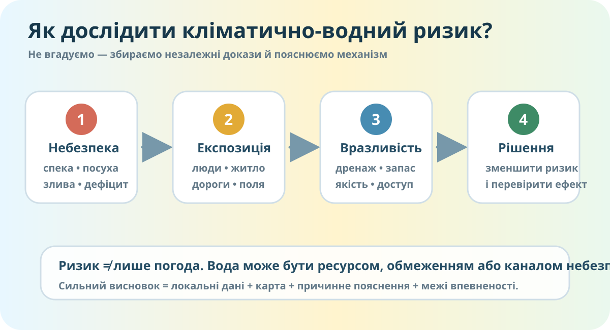

Який ризик для нашої місцевості важливіший?
Оберіть одну проблему: посуха, хвиля спеки, сильна злива/підтоплення або дефіцит води. Сформулюйте гіпотезу, що робить Вашу місцевість вразливою.

Локальна навчальна схема: небезпека + експозиція + вразливість → ризик; водні ресурси можуть його посилювати або зменшувати.
Зберіть три незалежні докази
- Температура/опади: зафіксуйте показник або просторовий контраст.
- Поверхня: карта забудови, долини, схили, водойми.
- Вода: річка, водосховище, ставок, канал, криниця чи інше джерело.
Масштабуйте карту до своєї громади. Шукайте долини річок, водойми, щільну забудову, відкриті поверхні та потенційні маршрути стоку.
Змініть умови — подивіться, як змінюється ризик
Умовний індекс ризику: 50/100
Навчальна модель, не офіційний прогноз. Вона показує логіку: навіть сильна небезпека може давати різний ризик залежно від експозиції та вразливості.
Поверхневі води
Річки, водосховища, ставки, канали.
Питайте: сезонність? забір води? ризик обміління? ризик паводку?
Підземні води
Криниці, свердловини, водоносні горизонти.
Одна криниця не описує весь водоносний горизонт.
Штучна інфраструктура
Водогони, дамби, дренаж, накопичувачі.
Інфраструктура зменшує один ризик, але інколи створює інший.
Паспорт водно-кліматичної вразливості
Теорія після даних
Кліматичний ризик виникає не лише через небезпечне явище. Важливі також експозиція — що саме потрапляє під вплив, і вразливість — наскільки система здатна витримати вплив.
Водні ресурси — придатні для використання поверхневі та підземні води. Їхня реальна доступність залежить від кількості, якості, сезонності, інфраструктури та потреб.
Не плутаємо
- Погода — короткочасний стан атмосфери.
- Клімат — довготривалі закономірності.
- Посуха — не просто «давно не було дощу», а тривалий дефіцит вологи.
- Паводок/підтоплення — результат не тільки опадів, а й рельєфу, забудови, ґрунтів та дренажу.
Доведіть свій висновок
Що треба перевірити наступним?
Тест • 10 балів
Тест відкривається після введення імені, прізвища та класу.
Домашнє мікродослідження
Повторіть §§ 25–42. Оберіть один локальний кліматичний ризик і зберіть 2 нові докази: один картографічний/цифровий і один зі спостереження або надійного локального джерела. Сформулюйте CER-висновок і одну практичну рекомендацію.